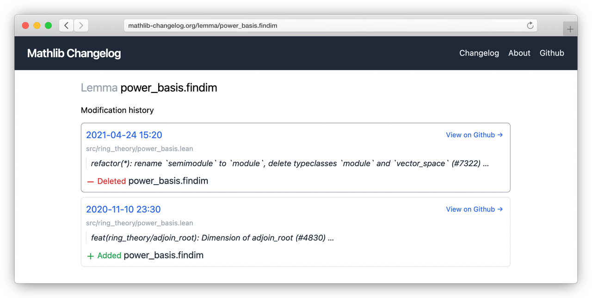

Introducing Mathlib Changelog

Tldr; check out mathlib-changelog.org to explore the historical changes to mathlib, and find out what happened to that lemma you were using.
A changelog for mathlib
As a beginner in the world of Lean and mathlib (and formal math in general), once I started branching out from the offical tutorials and the excellent Natural Number Game and started looking at proofs online, I found that I kept getting confusing errors, even when typing verbatim what I would see on the screen. Searching on Google didn't help, and I often couldn’t find any reference to some of the definitions and lemmas I was seeing in the mathlib docs.
Disoriented, I eventually stumbled onto the amazing Leanprover Community Zulip chat where I learned that mathlib changes very fast, so it’s common for lemmas and theorems to be added and removed all the time. This means mathlib can improve at lightning speed, but also means that content created even a few months ago might not work with new versions of mathlib. After discussing on Zulip the pros and cons of ideas for versioning or maintaining an official changelog, it seemed like the most practical path forward would be to build a tool to automatically extract a searchable changelog from the mathlib git history. Or it could be because I work as a software engineer, so somehow my solution to every problem is to build more software...
The result is mathlib-changelog.org, a tool which keeps track of changes to mathlib, and lets you search for any lemma, theorem, def, abbreviation, structure, or inductive which was part of mathlib at any point in the past and track which commits may have modified it. The hope is that this will make it easier to figure out what happened when a theorem you’re using disappears, and what the replacement is.
The rest of this post will talk about the engineering behind how this works.
How it works
While building this, I had a few goals for the project:
- It should be free to run
- It should not require a backend
- It should have a search capability
- Google should be able to index all pages
- It should stay up to date with mathlib automatically
- It should be fully open-source
To accomplish this, the project uses a GitHub repo as its main “database” containing the current state of the changelog in both JSON and TXT formats. The GitHub repo updates itself nightly on a cron using GitHub Actions to import new changes from mathlib.
The main technical challenge of building the changelog is how to extract all the relevant changes from every commit to mathlib, and do it fast enough to run in a GitHub Action. Running a full Lean environment and parsing every commit, while it would be the most accurate (and awesome) solution, isn’t feasible because it’s too slow. mathlib has over 14,000 commits, and Lean takes 30+ seconds to load mathlib, meaning a faster solution was needed.
The solution I settled on was to use Python and just scan through each modified file in each commit as a string and keep track of which tracked keywords are present. This isn’t guaranteed to catch everything, but it seems to work surprisingly well.
The website itself is a static site built using NextJS and generated from the JSON version of the changelog in the GitHub repo. NextJS has the added benefit of being able to lazily generate static pages. There are over 100,000 pages on the changelog, so generating and uploading them each up-front would take too long to be feasible in a GitHub Action (I tried).
The website search is all handled on the frontend. It just downloads a full list of every item in the changelog and does full-text search locally in the browser. It’s not the most advanced search in the world, but being run locally at least means it’s extremely fast!
If there’s anything the changelog is missing, or if you have any ideas for improvements, open an issue or pull request in the GitHub repo. Contributions are welcome!
Thank you to the mathlib community!
Thank you to everyone on Zulip who tried out the changelog, found bugs, offered suggestions, and helped brainstorm ideas for how this can work. This includes Alex Best, Damiano Testa, Eric Wieser, Floris van Doorn, Heather Macbeth, Johan Commelin, Kevin Buzzard, Kyle Miller, and others!